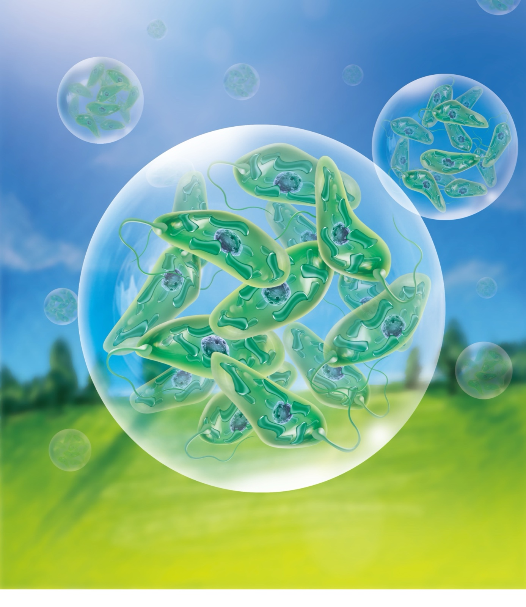

01
Single-cell analysis
Bulk measurements can hide cell-to-cell differences. We isolate and screen single cells in controlled droplets to reveal biological diversity at high throughput.
We engineer precisely controlled droplets for scalable cell analysis and molecular diagnostics, increasing experimental throughput while reducing sample use.

Bulk measurements can hide cell-to-cell differences. We isolate and screen single cells in controlled droplets to reveal biological diversity at high throughput.
Low-abundance targets are difficult to quantify. We combine droplet partitioning with CRISPR assays for sensitive nucleic-acid detection and absolute quantification.
Conventional cultures poorly reflect 3D tumour biology. We generate uniform spheroids in droplets to improve reproducibility in drug and nanomedicine testing.